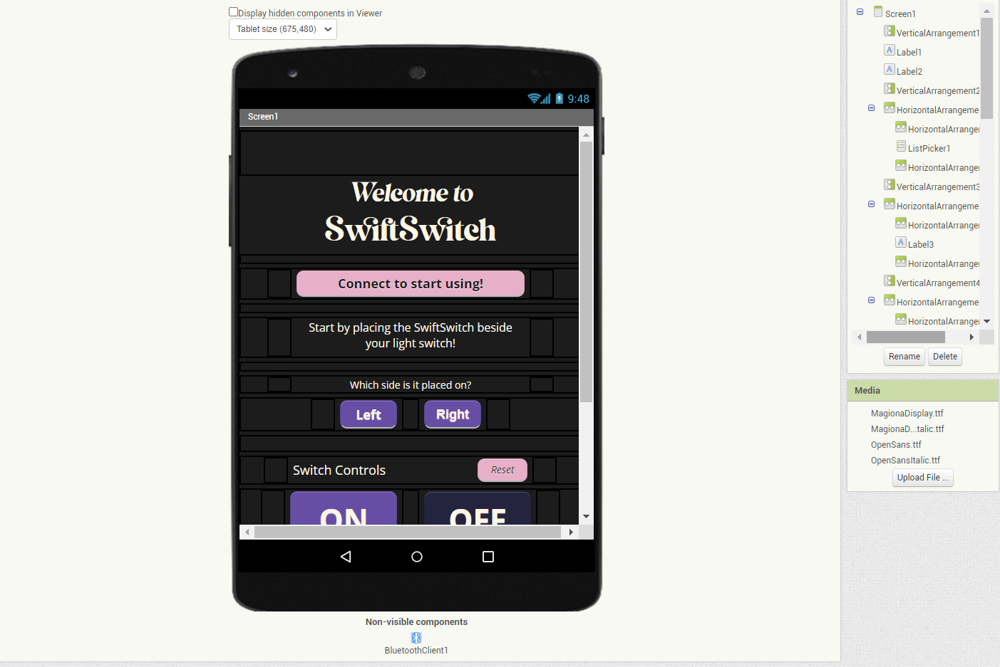

(Project Overview)Final Project
Welcome to the documentation for the SwiftSwitch project—an innovative venture aimed at revolutionizing the way we interact with switches. In this comprehensive guide, we'll delve into the inception, design, and development of SwiftSwitch, your ultimate digital control companion.
Objective: Our primary goal with SwiftSwitch was to create a cutting-edge solution that seamlessly blends the world of switches with the power of digital control. By combining advanced technology with everyday convenience, SwiftSwitch enables users to effortlessly manage lights, devices, and more, all while enhancing their lifestyle with smart, streamlined living.
Scope: This documentation provides an in-depth look at the various components, features, and functionalities that make SwiftSwitch a standout in the realm of switch control. From its smart connectivity options to adaptive height mechanisms, intuitive app interface, and beyond, every aspect of SwiftSwitch's design and implementation is covered.
Audience: This documentation caters to a wide range of audiences, including tech enthusiasts, DIY hobbyists, developers, and anyone intrigued by the possibilities of merging technology with daily life. Whether you're interested in the technical intricacies or seeking a user-friendly guide to SwiftSwitch, this documentation offers valuable insights.
Structure: The documentation is divided into logically organized sections, each dedicated to a specific aspect of SwiftSwitch. From the initial concept and design stages to implementation, testing, and practical usage, you'll find a comprehensive breakdown of SwiftSwitch's journey from idea to reality.
Ideation
In this section, we explore the initial stages that set the foundation for SwiftSwitch's creation. Ideation encompassed a thorough analysis of requirements and extensive online research, both of which played pivotal roles in shaping the concept of SwiftSwitch.
Requirements Analysis: The journey began with a meticulous examination of the requirements SwiftSwitch needed to fulfil. By dissecting the practical needs and user expectations, I defined the core functionalities, connectivity options, and usability features that SwiftSwitch would ultimately offer. This analytical process laid the groundwork for a solution that seamlessly merges technology and real-world application.
Online Research: Leveraging the power of the internet, comprehensive online research was conducted to identify existing solutions, trends, and potential technological integrations. This research not only helped me understand the market landscape but also provided insights into innovative ideas and potential differentiators for SwiftSwitch.
Sketching the Vision: Amid requirements analysis and research, a pivotal creative step was taken,
sketching the initial vision of SwiftSwitch. A visual representation of the concept helped consolidate
ideas and served as a tangible starting point for design and development.
As the design journey progressed, it's important to note that the final concept did undergo
transformations from its initial representation, aligning more intricately with the evolving goals and
insights gathered during the development process.
Material Listing
This table provides an overview of the essential components required for the SwiftSwitch project apart from the materials that contribute to the external appearance.
CAD Modelling
In this section, we present a detailed look into the CAD modeling process of SwiftSwitch. The CAD models provide a comprehensive visual representation of the project, offering insights into both the overall structure and the components that require 3D printing for the exterior appearance.
The iframe below showcases the complete SwiftSwitch model, providing a 360-degree view of the product's design and layout.
Additionally, the iframe below highlights specific components that are designated for 3D printing. These components contribute to the external appearance of SwiftSwitch, ensuring a polished and functional design.
The CAD modeling stage plays a crucial role in visualizing the project's form and functionality. By exploring both the entire SwiftSwitch model and the intricacies of the 3D printed components, you'll gain a comprehensive understanding of how technology and design converge in this innovative endeavor.
Arduino Code
In this section, we present the Arduino code that powers the SwiftSwitch project. The code snippets provided below are essential for the proper functioning of SwiftSwitch's various components and functionalities.
Mobile App
In this section, we present the mobile app developed using MIT App Inventor, which complements the SwiftSwitch project. The app provides a user-friendly interface to interact with SwiftSwitch, offering convenient control over its various functionalities.
Below are screenshots of the MIT App Inventor design interface and the code blocks editor:

The SwiftSwitch mobile app is designed to establish a seamless connection with the SwiftSwitch device, enabling users to effortlessly manage lights, devices, and more from their smartphones.
Key Features:
- SwiftSwitch's intuitive Bluetooth connectivity ensures instant synchronization with your smartphone or tablet, giving you the power to manage your switches from anywhere within your space.
- Say goodbye to one-size-fits-all solutions. SwiftSwitch's adjustable height mechanism adapts to your switch configuration, ensuring a perfect fit and a seamless blend with your environment.
- Visual cues have never been so vibrant. SwiftSwitch's colorful LED indicators provide real-time feedback on your switches' status, ensuring you're always in the know.
- The SwiftSwitch app offers a user-friendly interface, granting you full control at your fingertips. Effortlessly toggle between switches.
Below is a screenshot showcasing the user interface of the SwiftSwitch mobile app:
Poster